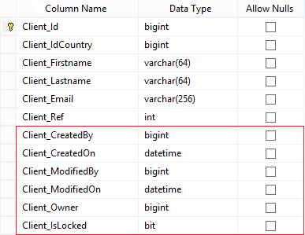
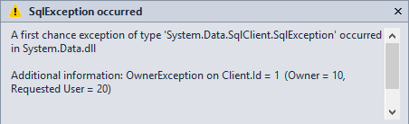

1. Database Setup
Set up the Data Ownership is really simple. Remember the Client table from previous Labs.

To implement the Data Ownership on this table you have to add the 6 following columns.
Details
-
CreatedByThe ID of the record creator.
-
CreatedOnThe date of the record creation.
-
ModifiedByThe ID of the last record modifier.
-
ModifiedOnThe date of the last record modification.
-
OwnerThe ID of the record owner.
-
IsLockedValue indicating whether the record is locked. When a record is locked it cannot be modified or deleted.
Data Ownership Implementation
- CreatedBy [BIGINT]
- CreatedOn [DATETIME2](0)
- ModifiedBy [BIGINT]
- ModifiedOn [DATETIME2](0)
- Owner [BIGINT]
- IsLocked [BIT]
Run LayerCake Generator to update the source code.

2. Use Data Ownership
In this code sample we create 2 Clients using 2 different user contexts.
// Create a new country... // --------------------------------------- var country = new Country(); country.Name.SetValue("USA"); using (var service = new ServiceProxy<ICountryService>()) { service.Proxy.Save(ClientContext.Admin, ref country); } // Create Client 1... // --------------------------------------- var client_1 = new Client { Firstname = "C1", Lastname = "C1", Ref = 1, IdCountry = country.Id, Email = "c1@c1.org" }; IUserContext userContext_1 = new ClientContext(10, "userA@userA", ""); using (var service = new ServiceProxy<IClientService>()) { service.Proxy.Save(userContext_1, ref client_1); } // Create Client 2... // --------------------------------------- var client_2 = new Client { Firstname = "C2", Lastname = "C2", Ref = 2, IdCountry = country.Id, Email = "c2@c2.org" }; IUserContext userContext_2 = new ClientContext(20, "userB@userB",""); using (var service = new ServiceProxy<IClientService>()) { service.Proxy.Save(userContext_2, ref client_2); }
Table records
Client_Id Client_IdCountry Client_Firstname Client_Lastname Client_Email Client_Ref Client_CreatedBy Client_CreatedOn Client_ModifiedBy Client_ModifiedOn Client_Owner Client_IsLocked --------- ---------------- ---------------- --------------- ------------ ---------- ---------------- ----------------------- ----------------- ----------------------- ------------ --------------- 1 4 C1 C1 c1@c1.org 1 10 2014-12-24 12:54:37 10 2014-12-24 12:54:37 10 0 2 4 C2 C2 c2@c2.org 2 20 2014-12-24 12:54:37 20 2014-12-24 12:54:37 20 0
What's happening when a user tries to modify a record owned by another one? For example in the following code sample UserB tries to modify the Client owned by UserA...
using (var service = new ServiceProxy<IClientService>()) { var options = new SearchOptions(); options.Filters.Add(Client.ColumnNames.Ref, FilterOperator.Equals, 1); var clients = service.Proxy.Search(userContext_2, ref options); var client = clients.First(); client.Email = "none@nowhere.org"; service.Proxy.Save(userContext_2, ref client); }
The following exception is raised
By default all modification operations (Save and Delete) with different owner are forbidden.
To bypass this control you have to set the WithContextSecurity option to false.
userContext_2.Options.WithContextSecurity = false; using (var service = new ServiceProxy<IClientService>()) { var options = new SearchOptions(); options.Filters.Add(Client.ColumnNames.Ref, FilterOperator.Equals, 1); var clients = service.Proxy.Search(userContext_2, ref options); var client = clients.First(); client.Email = "none@nowhere.org"; service.Proxy.Save(userContext_2, ref client); }
Table records
Client_Id Client_IdCountry Client_Firstname Client_Lastname Client_Email Client_Ref Client_CreatedBy Client_CreatedOn Client_ModifiedBy Client_ModifiedOn Client_Owner Client_IsLocked --------- ---------------- ---------------- --------------- ---------------- ---------- ---------------- ------------------- ----------------- ------------------- ------------ --------------- 1 4 C1 C1 none@nowhere.org 1 10 2014-12-24 12:54:37 20 2014-12-24 12:57:51 10 0 2 4 C2 C2 c2@c2.org 2 20 2014-12-24 12:54:37 20 2014-12-24 12:54:37 20 0
ClientContext.Anonymous
It is possible to combine the Data Ownership with the Data Logging.